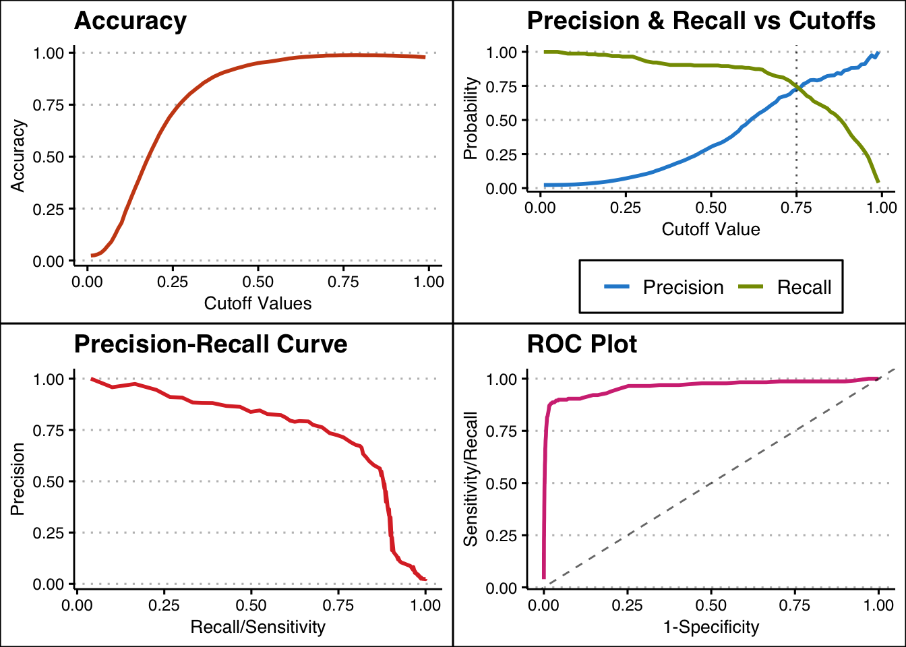
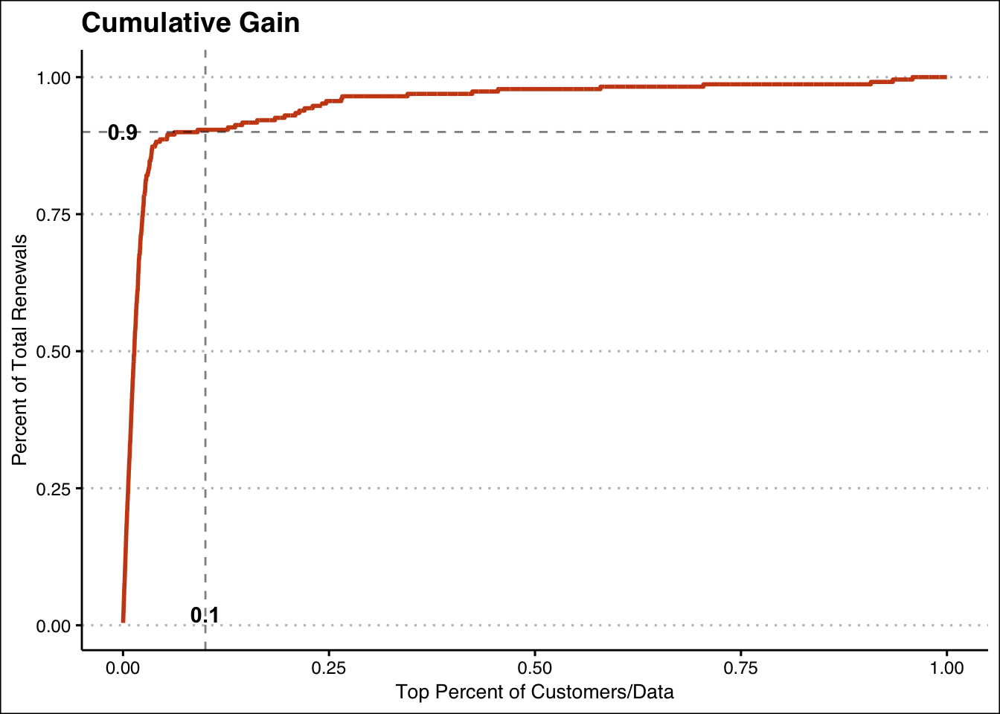
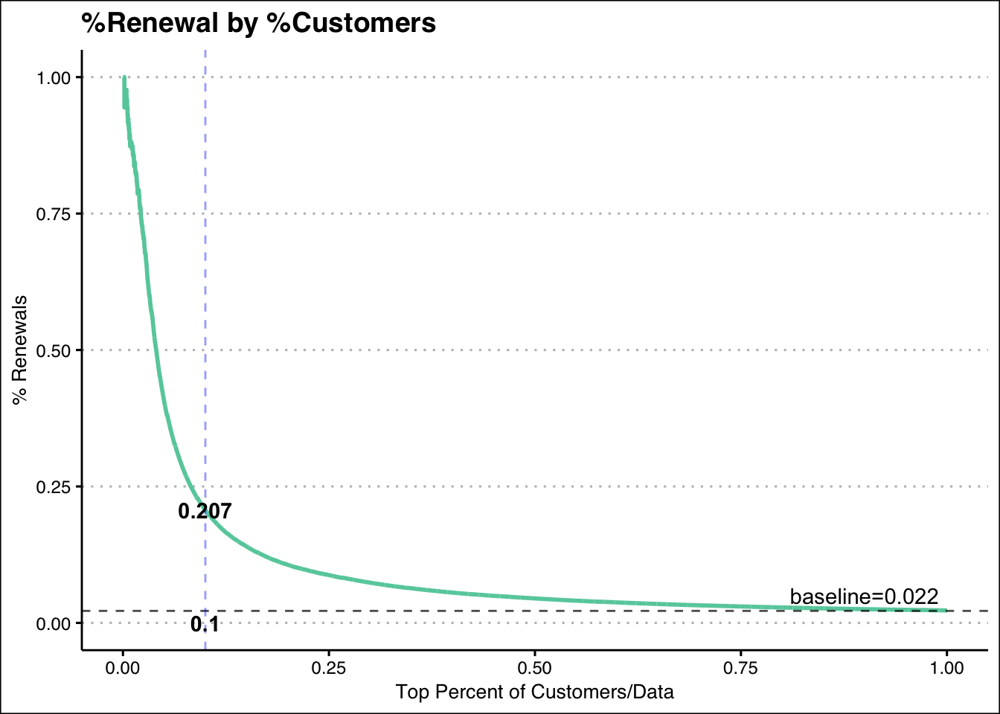
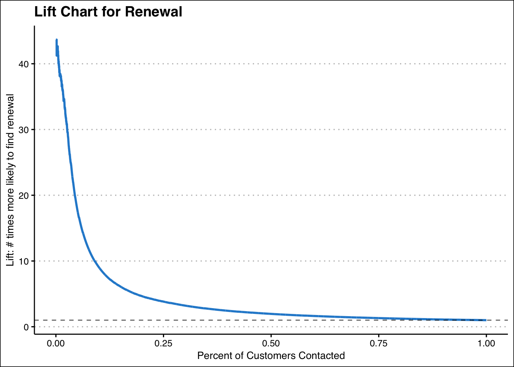

library(caret)
library(tidyverse)
library(ggthemes)Cumulative Gains and Lift
# Read in the data and mutate some
# predictors.
grey = read_csv("Grey.csv") %>%
mutate_at(vars(DwellingType, Gender, Marital, ChildPresent,
Occupation, HomeValue, MagazineStatus, LastPaymentType,
GiftDonor), .funs = factor) %>%
# Recode the target feature to be
# consistent with how it was formatted
# when training the random forest model.
mutate(Renewal = factor(ifelse(Renewal=="Yes", 1, 0)))
# Reload the pre-trained and saved
# random forest model for us to analyze.
rf_model = readRDS("GCC_rf_model.rds")# Randomly select a practice set of 10,000 customers.
# We will use this as the "new" customers that we want
# to sift through with marketing.
set.seed(5832)
idx = sample(nrow(grey), 10000)
custs = grey[idx, ]
rm(idx)# Generate predicted probabilities of Renewal
# and then compare with actual Renewal outcomes.
custs$ProbRenewal = predict(rf_model, custs, type = "prob")[,"1"]
custs = custs %>%
select(ProbRenewal, Renewal)
head(custs, 12)# A tibble: 12 × 2
ProbRenewal Renewal
<dbl> <fct>
1 0.18 0
2 0.146 0
3 0.96 0
4 0.136 0
5 0.09 0
6 0.26 0
7 0.176 0
8 0.228 0
9 0.232 0
10 0.292 0
11 0.164 0
12 0.774 1 # Sort the data in descending order of
# predicted probability of Renewal.
# Then create count of customer.
custs = custs %>%
arrange(desc(ProbRenewal)) %>%
mutate(CustCount = row_number()) %>%
select(CustCount, ProbRenewal, Renewal)
custs# A tibble: 10,000 × 3
CustCount ProbRenewal Renewal
<int> <dbl> <fct>
1 1 0.998 1
2 2 0.996 1
3 3 0.996 1
4 4 0.996 1
5 5 0.994 1
6 6 0.992 1
7 7 0.992 1
8 8 0.992 1
9 9 0.992 1
10 10 0.99 1
# … with 9,990 more rows# Create classification cutoff data
cut_offs = seq(0.01, 0.99, 0.01)
# Create blank dataframe to store values.
graph_data = data.frame(cutoff=NA, precision=NA,
recall=NA, accuracy=NA,
specificity=NA)
# Loop through cutoff values to
# calculate a confusion matrix and
# associated meaures for each cutoff.
for(c in cut_offs) {
class_label = factor(ifelse(custs$ProbRenewal > c, 1, 0), levels = c("0","1"))
cm = confusionMatrix(class_label, custs$Renewal, positive = "1")
graph_data = graph_data %>%
drop_na() %>%
add_row(cutoff = c,
precision = cm$byClass[["Pos Pred Value"]],
recall = cm$byClass[["Sensitivity"]],
accuracy = cm$overall[["Accuracy"]],
specificity = cm$byClass[["Specificity"]])
}Warning: Using `size` aesthetic for lines was deprecated in ggplot2 3.4.0.
ℹ Please use `linewidth` instead.
# Calculate cumulative renewal cases.
# Answers, "how many actual renewals are
# contained in the top X customers?"
custs = custs %>%
mutate(Renewal = as.numeric(levels(Renewal))[Renewal]) %>%
mutate(cumulative_renewals = cumsum(Renewal))
custs# A tibble: 10,000 × 4
CustCount ProbRenewal Renewal cumulative_renewals
<int> <dbl> <dbl> <dbl>
1 1 0.998 1 1
2 2 0.996 1 2
3 3 0.996 1 3
4 4 0.996 1 4
5 5 0.994 1 5
6 6 0.992 1 6
7 7 0.992 1 7
8 8 0.992 1 8
9 9 0.992 1 9
10 10 0.99 1 10
# … with 9,990 more rows# Create a variable for the percent of customers
# in the data represented by the top X customers.
# Also calculate # of Renewals as a percent of total
# Renewals in the 10,000 customers.
custs = custs %>%
mutate(percent_of_custs = CustCount/n()) %>%
mutate(percent_of_renewals = cumulative_renewals/sum(Renewal))
custs# A tibble: 10,000 × 6
CustCount ProbRenewal Renewal cumulative_renewals percent_of_custs percent_…¹
<int> <dbl> <dbl> <dbl> <dbl> <dbl>
1 1 0.998 1 1 0.0001 0.00437
2 2 0.996 1 2 0.0002 0.00873
3 3 0.996 1 3 0.0003 0.0131
4 4 0.996 1 4 0.0004 0.0175
5 5 0.994 1 5 0.0005 0.0218
6 6 0.992 1 6 0.0006 0.0262
7 7 0.992 1 7 0.0007 0.0306
8 8 0.992 1 8 0.0008 0.0349
9 9 0.992 1 9 0.0009 0.0393
10 10 0.99 1 10 0.001 0.0437
# … with 9,990 more rows, and abbreviated variable name ¹percent_of_renewals# Calculate and graph the cumulative gain
# chart showing the relationship between
# top % of customers marketed to and the
# % of Renewals reached.
custs %>%
ggplot(aes(x=percent_of_custs, y=percent_of_renewals)) +
geom_line(color = "#cb4b16", size = 1) +
geom_vline(xintercept = 0.1, linetype="dashed", alpha=0.5) +
annotate("text", x = 0.1, y=0.02, label = "0.1", fontface="bold") +
geom_hline(yintercept = 0.9, linetype="dashed", alpha=0.5) +
annotate("text", x = 0.0, y=0.9, label="0.9", fontface="bold") +
labs(title = "Cumulative Gain",
x = "Top Percent of Customers/Data",
y = "Percent of Total Renewals") +
theme_clean()
# Calculate pre-Lift values. This includes
# the proportion of the top X customers that
# are Renewals and the baseline proportion in
# the whole sample. And finally, we calculate
# the lift as a ratio of propRenew/baseline.
custs = custs %>%
mutate(propRenew = cumulative_renewals / CustCount) %>%
mutate(baseline = sum(Renewal)/n()) %>%
mutate(lift = propRenew/baseline)
# View a subset of features to make it
# easier to see.
custs %>%
select(percent_of_custs, percent_of_renewals, ProbRenewal, propRenew, baseline, lift)# A tibble: 10,000 × 6
percent_of_custs percent_of_renewals ProbRenewal propRenew baseline lift
<dbl> <dbl> <dbl> <dbl> <dbl> <dbl>
1 0.0001 0.00437 0.998 1 0.0229 43.7
2 0.0002 0.00873 0.996 1 0.0229 43.7
3 0.0003 0.0131 0.996 1 0.0229 43.7
4 0.0004 0.0175 0.996 1 0.0229 43.7
5 0.0005 0.0218 0.994 1 0.0229 43.7
6 0.0006 0.0262 0.992 1 0.0229 43.7
7 0.0007 0.0306 0.992 1 0.0229 43.7
8 0.0008 0.0349 0.992 1 0.0229 43.7
9 0.0009 0.0393 0.992 1 0.0229 43.7
10 0.001 0.0437 0.99 1 0.0229 43.7
# … with 9,990 more rows# Visualize the percentage of renewals in top X
# versus the percentage of the sample marketing
# was sent to.
ggplot(custs, aes(x=percent_of_custs, y=propRenew)) +
geom_line(color = "aquamarine3", size=1) +
geom_hline(yintercept = 0.022, linetype="dashed", alpha=0.7) +
geom_vline(xintercept = 0.1, linetype="dashed", color="blue", alpha=0.4) +
annotate("text", x=0.1, y=0.207, label="0.207", fontface="bold") +
annotate("text", x=0.1, y=0.0, label = "0.1", fontface="bold") +
annotate("text", x=0.9, y=0.05, label="baseline=0.022") +
labs(title="%Renewal by %Customers",
x = "Top Percent of Customers/Data",
y = "% Renewals") +
theme_clean()
# Finally we visualize the lift chart/graph
ggplot(custs, aes(x=percent_of_custs, y=lift)) +
geom_line(color = "#268bd2", size = 1) +
geom_hline(yintercept = 1, linetype="dashed", alpha=0.6) +
labs(title = "Lift Chart for Renewal",
x = "Percent of Customers Contacted",
y = "Lift: # times more likely to find renewal") +
theme_clean()